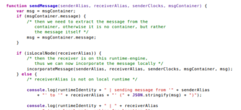

Event Sourcing?
vs. |
Retroactive Opportunities
- Read History
- Insert/Delete
- Compare Implementations
- …
Related Work
- Retroactive Datastructures
- History-aware Algorithms & Languages
- Reversible Debugging
- Version Control Systems
- Time Travel Theory
- …
ES + CQRS
ES + CQRS
Benjamin Erb, Frank Kargl: Combining Discrete Event Simulations and Event Sourcing
Seventh International Conference on Simulation Tools and Techniques (2014)
Seventh International Conference on Simulation Tools and Techniques (2014)
Commands as Intentions
Event vs. Command Sourcing
Event vs. Command Sourcing
Event vs. Command Sourcing
Editing the Event Log
Fowler's Retroactive Events
Editing the Event Log
Fowler's Retroactive Events
Direct Editing: Mitigate Issues
- Parallel Universe
- Main Timeline ↔ Branches
- Return results from computations on branches
to main timeline via event primitives
- Main Timeline ↔ Branches
- Return results from computations on branches to main timeline via event primitives
Editing the Event Log
Direct Editing
- Temporal Paradoxes:
- Grandfather Paradox
- Causal Loop
- Consistency Violations
- Temporal Paradoxes:
- Consistency Violations
Direct Editing: Consistency?
- Parallel Universes
- Self-consistency Principle
Direct Editing: Consistency?
- Parallel Universe
- Distinguish: Main Timeline vs. Branches
- Use event primitives to return results
to main timeline
- Self-consistency Principle
- Distinguish: Main Timeline vs. Branches
- Use event primitives to return results
to main timeline
Direct Editing: Consistency?
- Parallel Universe
- Distinguish: Main Timeline vs. Branches
- Use event primitives to return results
to main timeline
- Distinguish: Main Timeline vs. Branches
- Use event primitives to return results
to main timeline
Direct Editing: Consistency?
- Parallel Universe
- Distinguish: Main Timeline vs. Branches
- Self-consistency Principle
- Validation
- Replay All
- Remove All Consequences
- Distinguish: Main Timeline vs. Branches
- Validation
- Replay All
- Remove All Consequences
Direct Editing: Consistency?
- Parallel Universe
- Distinguish: Main Timeline vs. Branches
- Use event primitives to return results
to main timeline
- Self-consistency Principle
- Validation
- Replay All (Tracing Causalities)
- Remove All Consequences (Tracing Causalities)
- Distinguish: Main Timeline vs. Branches
- Use event primitives to return results
to main timeline
- Validation
- Replay All (Tracing Causalities)
- Remove All Consequences (Tracing Causalities)
Direct Editing: Consistency?
- Replay All (track causal dependencies)
- Remove All (track causal dependencies)
- Validation
Tracking Causal Dependencies
Side Effects
Side Effects
Side Effects: How to control them in a replay?
CommandModel.process("ValidateCreditcard"){
/* side effect */
var validation = fetch("https://.../check-card", ...);
if (validation == true) {
return Event("OrderPlaced");
} else {
return Event("OrderCanceled");
}
}
c0: ValidateCreditcard()
e0: ValidationSuccessful
c1: PlaceOrder()
e1: OrderPlaced
Limitations of Retroaction
- Hidden Causalities
- Command Semantics
- Determinism in Replays
- Performance of Retroaction
- …
Retroaction-enabled Architecture?
Retroaction-enabled Architecture?
Retroaction-enabled Architecture?
Programming Model
commands.tags.applyDiscount = ["discount-modifications"];
commands.applyDiscount = function(request, state) {
/* find total order price in global state object, apply discount */
var totalPrice = state.orders[request.orderId].totalPrice;
state.orders[request.orderId].discount = totalPrice * 0.1;
/* if order is changed retroactively at a past point this
command needs to be replayed, since a different discount
would then be computed */
var readDuringComputation = [ "state.orders[" + request.orderId + "].totalPrice" ];
return {
success: true,
newState: state,
read: readDuringComputation,
eventTags: ["applied-discount"]
}
}
Programming Model
commandTags.someCmd = [ "..." ];
commands.someCmd = function(request, state) {
state.foo = state.bar + 1;
var b = retroactive.createBranch("big bang");
b.deleteEvents(...);
b.getState();
return {
read: [ "state.bar" ],
eventTags: [ "..." ]
}
}
Programming Model
- Event Format (Delta Encoding)
- Retroaction-aware Programming
- …
Implementation
- JavaScript + node.js
Object.observe() from ECMAScript 7- JSON Patches (RFC 6902)
- HTTP + REST
Object.observe() from ECMAScript 7Implementation
Online Shop Scenario
Implemenation: Automatically Generated Events
/* add product id 172 to the "state.cart" object with quantity 1 */
[ { "op": "add", "path": "/cart/172", "value": 1 } ]
/* update the quantity of the product "state.cart[172]" */
[ { "op": "replace", "path": "/cart/172", "value": 3 } ]
/* add an object to "state.orders" array and remove it from cart */
[{
"op": "add",
"path": "/orders/-",
"value": {
"timestamp": 1458061070313,
"content": { "172": 3 }
}
},
{
"op": "remove",
"path": "/cart/172"
}]
Chronograph + Retroaction
Chronograph
vertices["foo"].behaviorFn = function(state, msg) {
// local computations
state.foo = state.bar + 1;
return [state, vertices["foo"].behaviorFn];
}
Future Work/Outlook
- Examine more architectures
- Self-referential, self-improving software
- Artificial intelligence, machine learning
- Novel debugging schemes
Summary
- ES is great match for retroaction
→All state changes are inherently captured
→Side effects can be recorded and reused as well
- A lot of issues come from direct editing
→Temporal Paradoxes, Consistency Issues
- Clever restrictions can be imposed
→Main Timeline vs. Branches, …
- A number of limitations need to be taken into account
→Hidden Causalities, Command Semantics, …
- Pratical application yields new problems
→Delta Encoding, Retroaction-aware Programming
- History-aware Algorithms, Explore alternate Program States, …
→All state changes are inherently captured
→Side effects can be recorded and reused as well
→Temporal Paradoxes, Consistency Issues
→Main Timeline vs. Branches, …
→Hidden Causalities, Command Semantics, …
→Delta Encoding, Retroaction-aware Programming
$ find . -name "question_*"
Delimitations to Related Work
- Thesis: Retroaction in the event-sourced environment
- Meta (VCSes)
- Decoupled (Debugging)
- Passive (Datastructures, Languages)
Editing the Event Log
Direct Editing
-
Consistency Violations:
e0: Created Account
e1: +500
→ eX: -1000
e2: -500
e0: Created Account
e1: +500
→ eX: -1000
e2: -500
Direct Editing: Ignore Consistency
- Use Case: Iterate towards Target State
- 1. Define state as target state
- 2. Iteratively modify past (insert, delete, …)
until target reached
until target reached
Editing the Event Log
Direct Editing
Side Effects: How to control them in a replay?
Side Effects: How to control them in a replay?
How to record their result? Control their behavior in replays? Branching?
Side Effects: How to control them in a replay?
- Isolate Side-Effects
- Split Commands
- Example:
PlaceOrder = FetchCurrencyRate + ProcessOrder + SendConfirmation
PlaceOrder = FetchCurrencyRate + ProcessOrder + SendConfirmation
Limitations of Retroaction
- Hidden Causalities
(Outside System, I/O)
- Command Semantics
(May annihilate Retroaction)
- Determinism in Replays
(Causally equivalent Replay)
- Performance of Retroaction
(Efficiency can be important)
(Outside System, I/O)
(May annihilate Retroaction)
(Causally equivalent Replay)
(Efficiency can be important)
Programming Model: Retroactive Use Cases
- Calculate discount based on previous orders
- Observe alternate states (execute orders as premium customer)
- Evaluate different command processing implementations
- Retroaction for optimization
- …
Side Effects: How to control them in a replay?
Side Effects: How to control them in a replay?
Side Effects: How to control them in a replay?

|
Side Effects: How to control them in a replay?
Side Effects: How to control them in a replay?
Side Effects: How to control them in a replay?
Side Effects: How to control them in a replay?
CommandModel.process("ValidateCreditcard"){
/* side effect */
var validation = fetch("https://.../check-card", ...);
if (validation == true) {
return Event("OrderPlaced");
} else {
return Event("OrderCanceled");
}
}
c0: ValidateCreditcard() e0: ValidationSuccessful c1: PlaceOrder() e1: OrderPlaced
Programming Model
- Analyze Practicality in a Programming Model
- Events = Explicit Changes to State
- Commands as Intentions
- Command Processing decoupled from Command
→Can be retroactively exchanged
→Can be retroactively exchanged
Implemenation: Automatically Generated Events
/* add product id 172 to the "state.cart" object with quantity 1 */
[ { "op": "add", "path": "/cart/172", "value": 1 } ]
/* update the quantity of the product "state.cart[172]" */
[ { "op": "replace", "path": "/cart/172", "value": 3 } ]
/* add an object to "state.orders" array and remove it from cart */
[{
"op": "add",
"path": "/orders/-",
"value": {
"timestamp": 1458061070313,
"content": { "172": 3 }
}
},
{
"op": "remove",
"path": "/cart/172"
}]
Implementation
Programming Model: Events
Unix diff
-state.shoppingCart = [1, 2, 3];
+state.shoppingCart = [1, 2, 3, 4];
… vs. JSON Patches (RFC 6902)
{ "op": "add", "path": "/state/shoppingCart/-", "value": 4 }
Retroaction-aware programming
state.foo[99] = "new last element";
// vs.
state.foo.push("new last element");
→ Helper functions to provide more semantics to instructions
Programming Model: Nested Branches
Programming Model
- Branches encapsulated in objects
- One cannot modify own timeline, only branches of it
- Results from retroaction are persisted as Events
commands.placeOrder = function(request, state) {
var b = retroactive.createBranch("big bang");
b.deleteEvents("product-removed-from-cart", false);
b.getState();
// ...
return {
newState: state,
success: true,
read: []
}
}
Chronograph + Retroaction
- Limitations apply as well
- Larger degree of hidden causalities outside of vertex
- Entire graph can be taken into account
- Some concepts can be transferred
(I/O Vertices, Branches vs. Main Timeline)
- Specific platform solutions can be found
(Portals, etc.)
(I/O Vertices, Branches vs. Main Timeline)
(Portals, etc.)